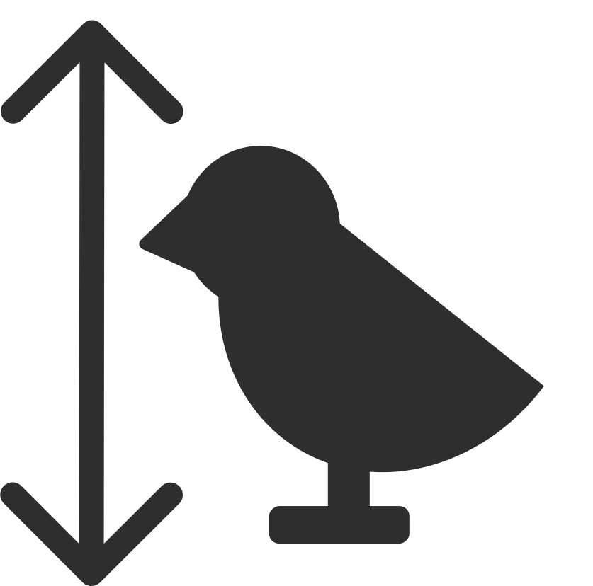

Grey
Collard Dove
Wood Pigeon
Kestrel
Coal Tit
Blue
Blue Tit
Great Tit
Jay
Magpie
Nuthatch
Kingfisher
Green
Ring Necked Parakeet
Greenfinch
Green Woodpecker
Black
Blackbird
Crow
Great Spotted Woodpecker
Little Grebe
White
Mute Swan
Pied Wagtail
Long Tailed Tit
Little Grebe
Red | Orange
Robin
Chaffinch
Hobby
Moorhen
Goldfinch
Yellow | Gold
Goldcrest
Goldfinch
Blue Tit
Great Tit
Brown
House Sparrow
Tree Sparrow
Wren
Treecreeper
Find a Bird
by Habitat
Gardens & Parks
Forest & Woodlands
Ponds & Water
Gardens & Parks
Blue Tit
All Year
Gardens, Parks & Forests

Very small (12cm)
Sorry, but it appears your browser does not support the audio element.
Bird Calls
Blue Tit
Sorry, but it appears your browser does not support the audio element.
All Year
Gardens, Parks & Forests
Very small (12cm)
Bird Calls
Forests & Woodlands
Ponds & Water